La Chine comme les USA ont plusieurs companies spatiales privés qui sont apparus en plus de la principale companie statale, CNSA. Notamment, LandSpace qui a envoyé le premier fusée alimenté par methane dans l'espace et iSpace, la première companie
spatiale privée chinoise.
SYSTEME SOLAIRE INTERNE
DAVINCI (NASA)
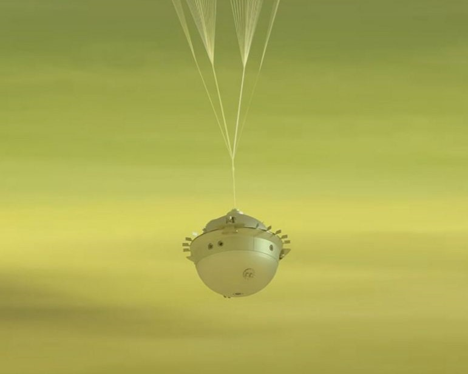
Mars Sample Return (NASA-ESA)
ExoMars Rover (ESA)
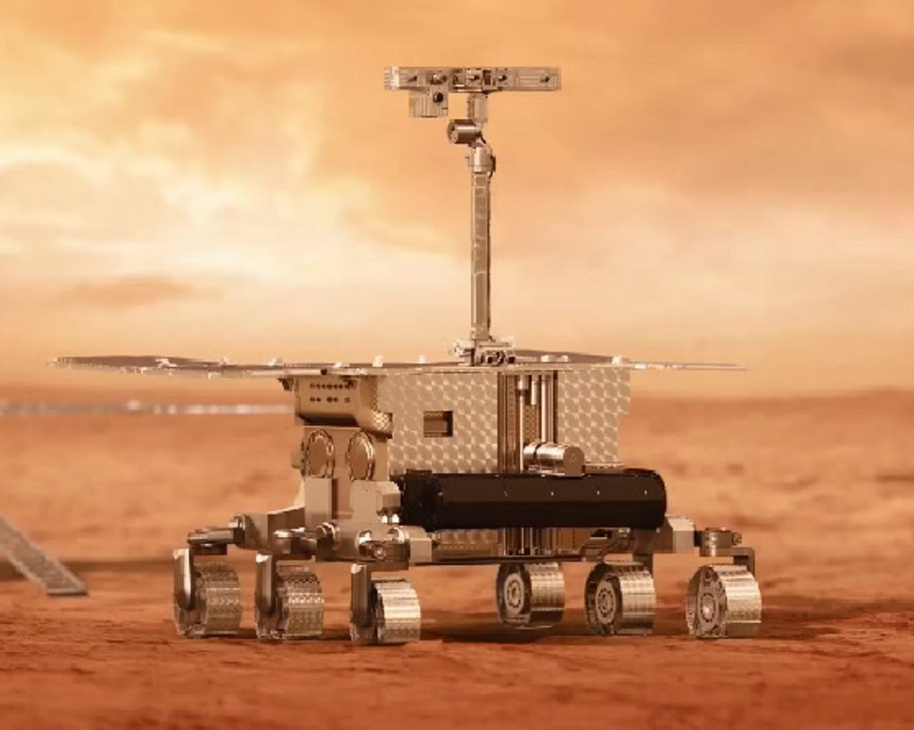
SYSTEME SOLAIRE EXTERNE
Europa Clipper (NASA)
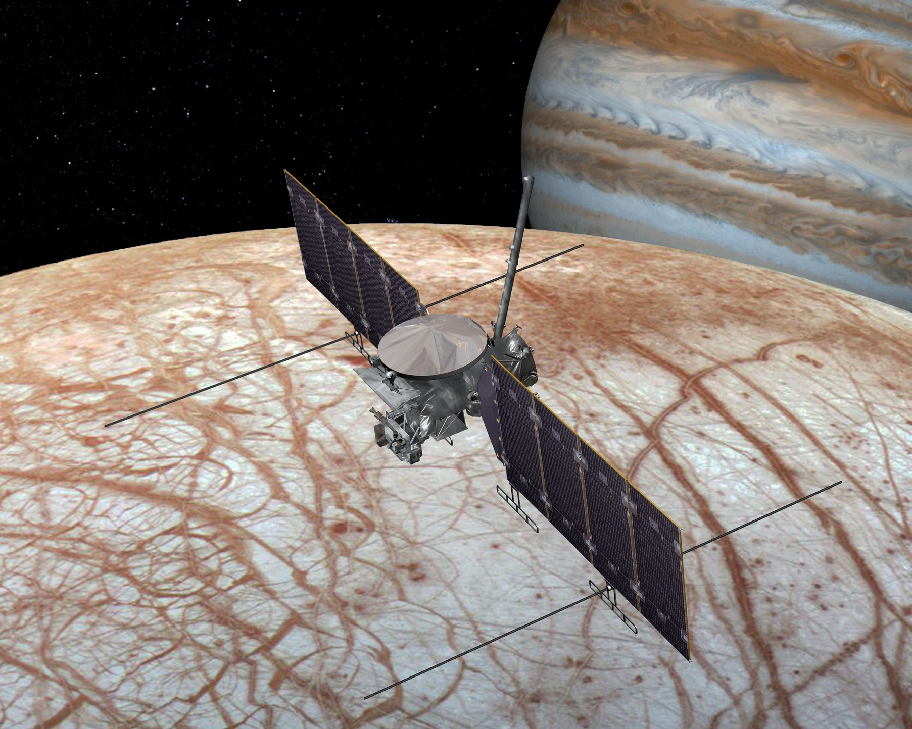
JUICE (ESA)
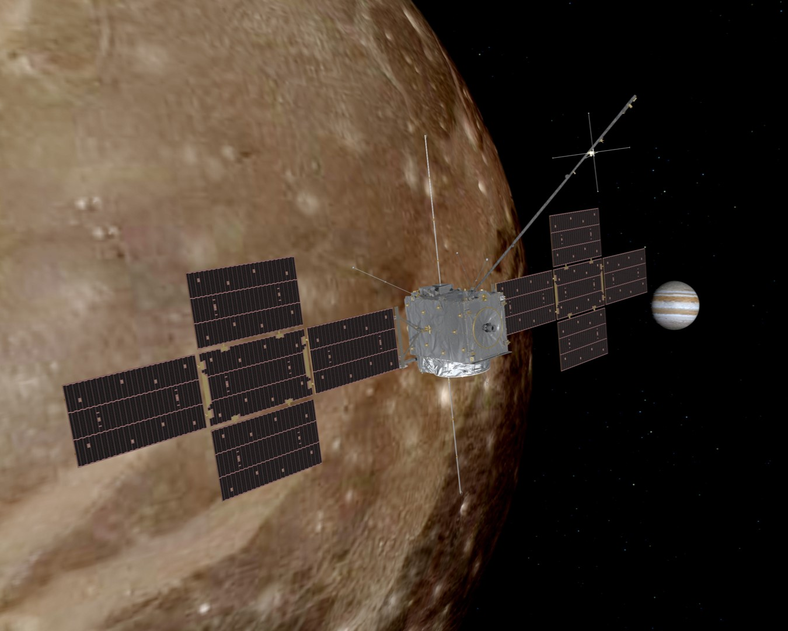
Dragonfly (NASA)
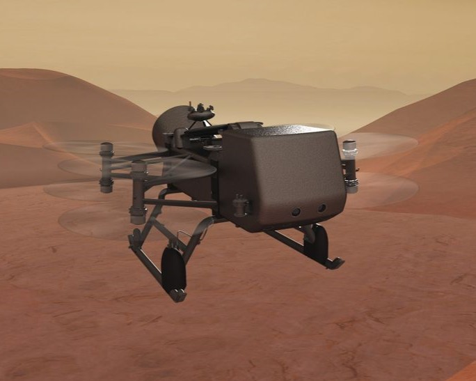
Propositions à Uranus et Neptune
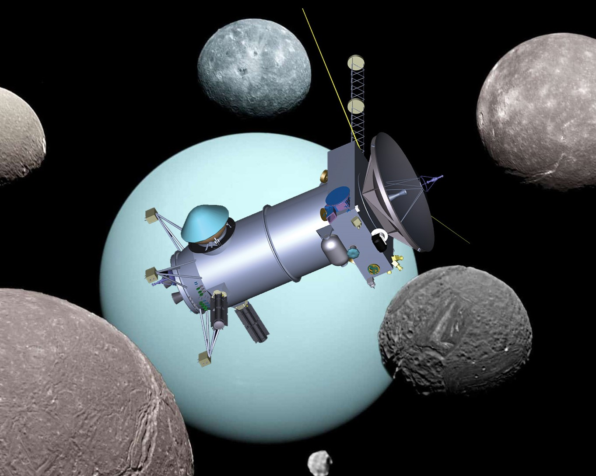
INTERESTELLAIRES
Propositions
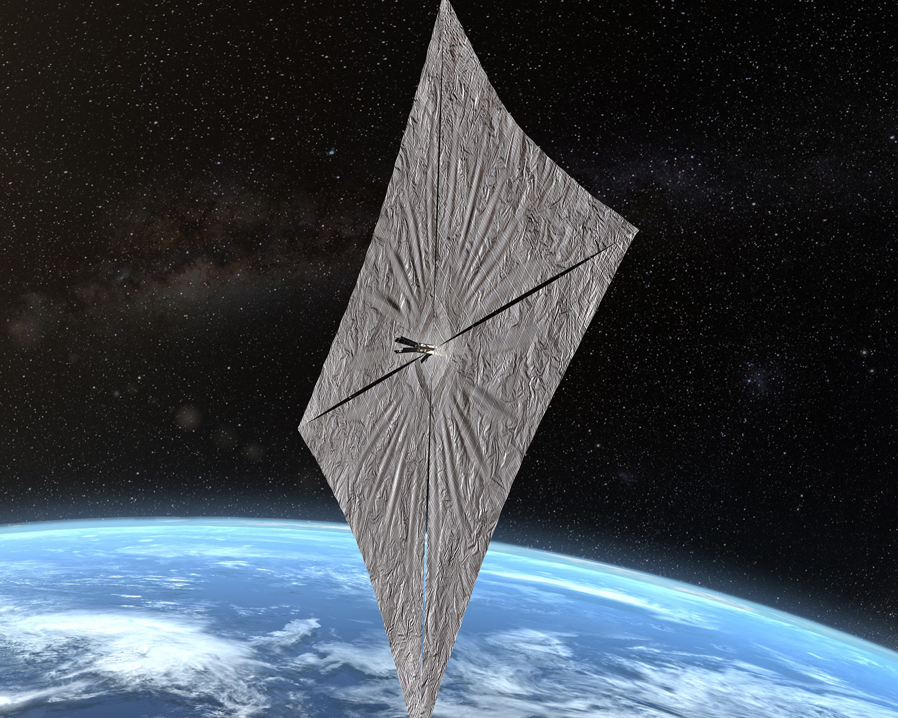
TELESCOPES
Roman (NASA)
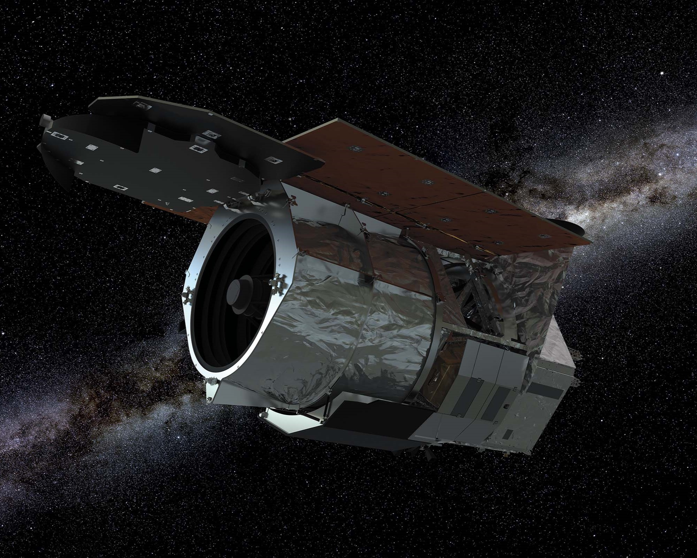
SPHEREx (NASA)
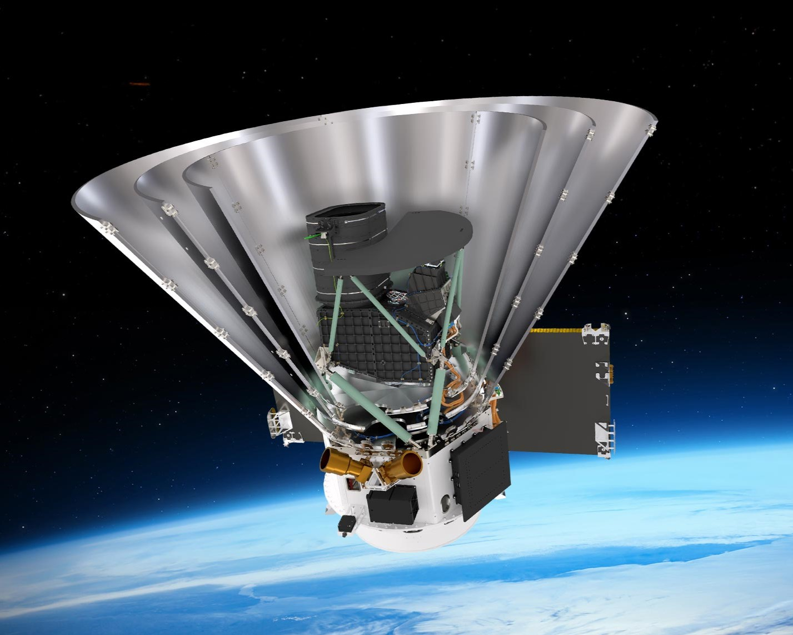
HABITEES
Artemis (NASA)

Programme Lunaire Habitée Chinois (CNSA)
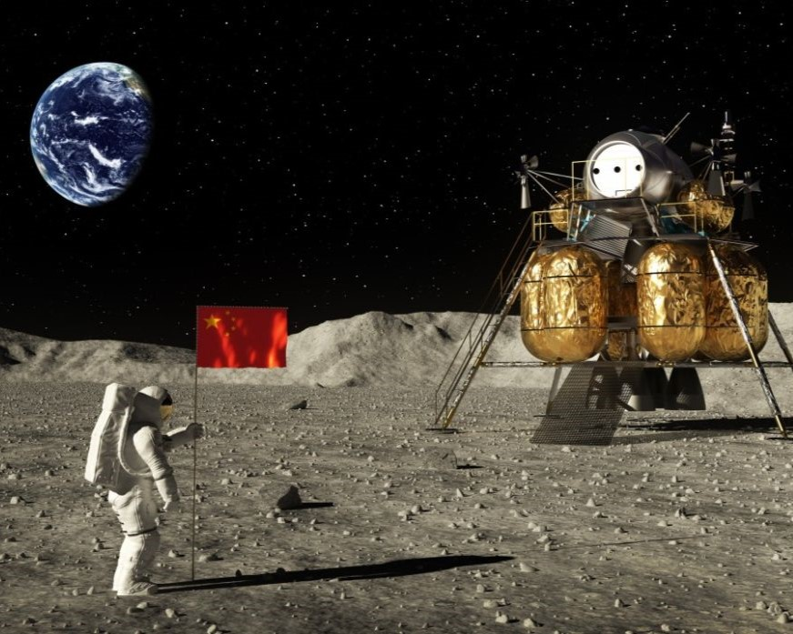
Missions Habitées à Mars (SpaceX)
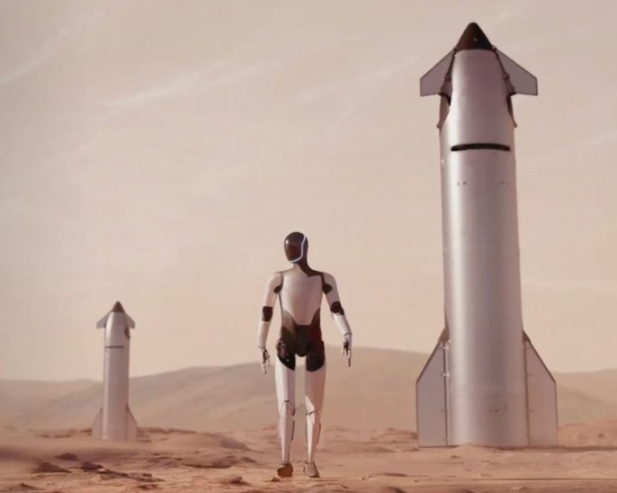
Stations Spatiales Commerciales
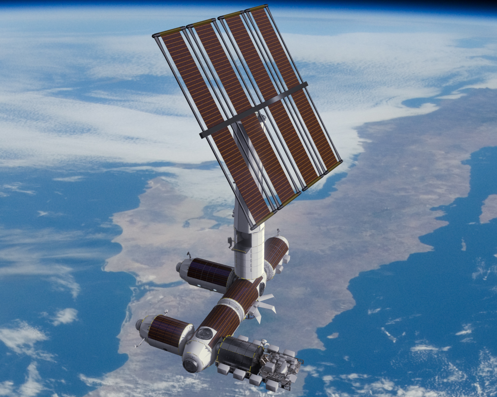
Lunar Gateway (NASA)
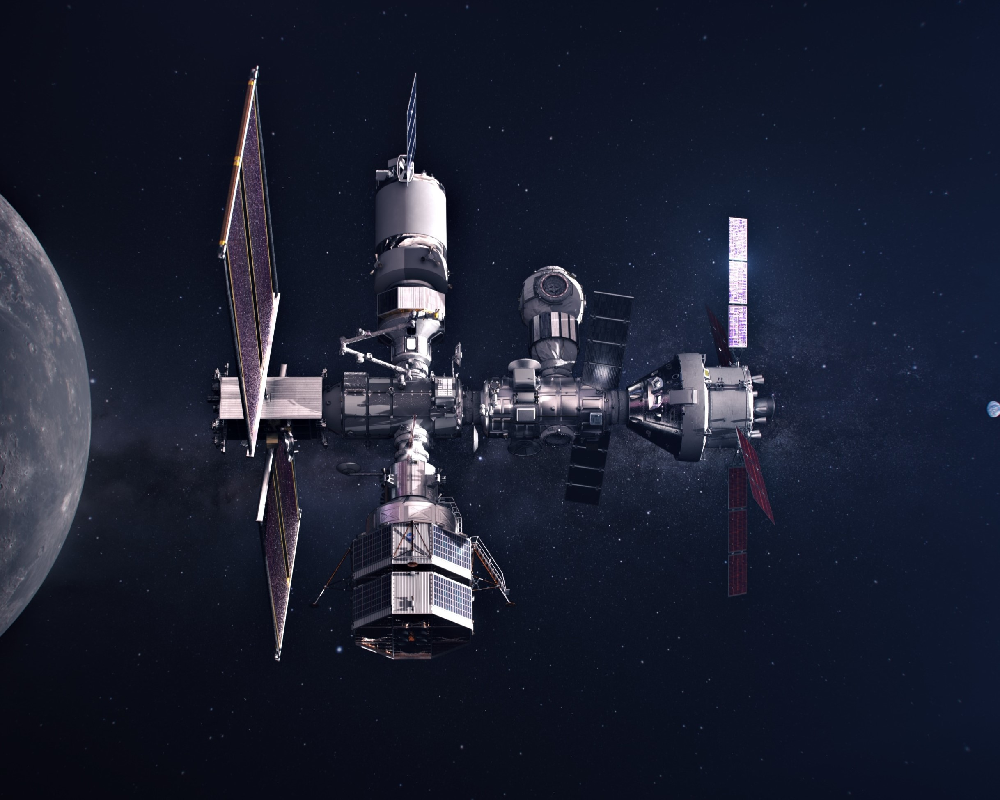